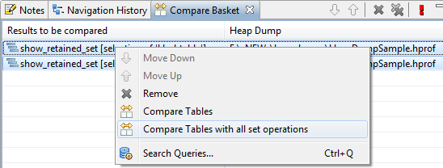
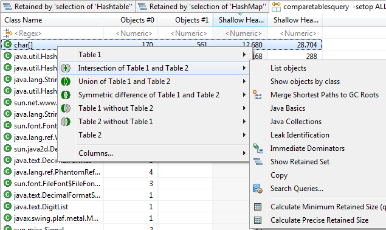
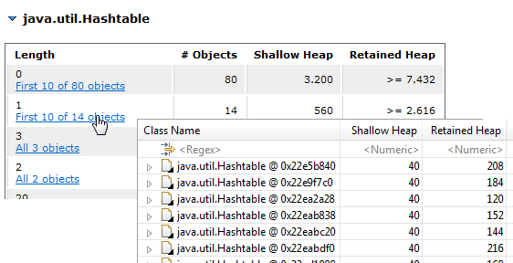

Here are descriptions of some of the more interesting or significant changes made to the Memory Analyzer for the 1.1 release.
Extract Ruby Related Details from the Heap Dumps
The Leak Suspects report has been extended to contain Ruby relevant information if a suspect thread was executing JRuby code somewhere on its call-stack. If possible MAT will point out which ruby script was being executed, and also provide the Ruby call-stack (next to the Java call-stack) of the thread.

Detailed ruby stack trace can also be extracted for JRuby threads using the context menu "Java Basics" -> "Thread Details" on a Thread object.
Set Operations on Compared Tables
When comparing tables from one and the same heap dump, it is now possible to perform different set operations on the comparison result.
 Links to Objects in HTML Reports
If a Memory Analyzer report (e.g. the Leak Suspect report) is open in the tool itself and not in a browser, then it will be possible to list at least some of the objects "behind" a row in tables (e.g. in a Histogram). Up to now only links to single objects were rendered. Now also the first up to 10 objects can be listed:
Accessibility Improvements
This release of MAT contains a series of accessibility improvements related to better support for keyboard navigation, screen reader (JAWS), and high contrast mode.
New and Noteworthy for Memory Analyzer 1.0
The New and Noteworthy document for version 1.0 is available here.